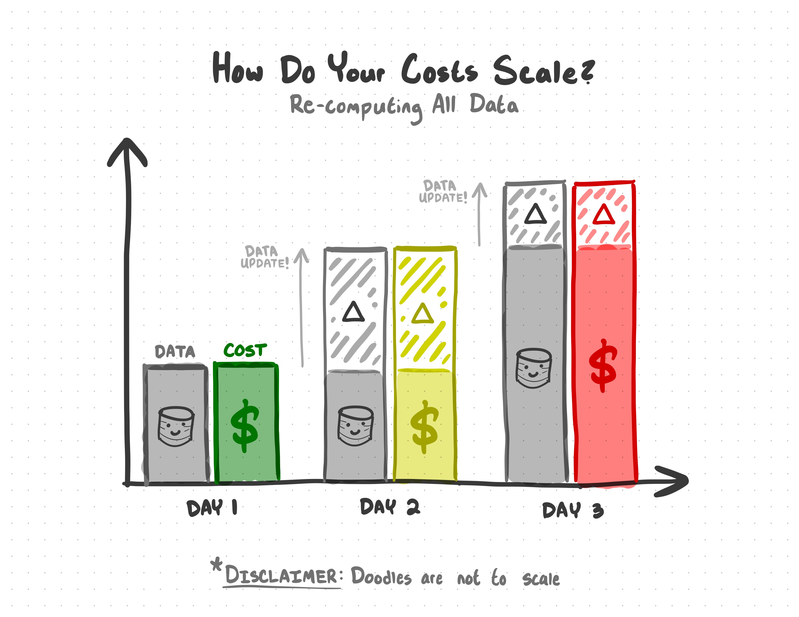
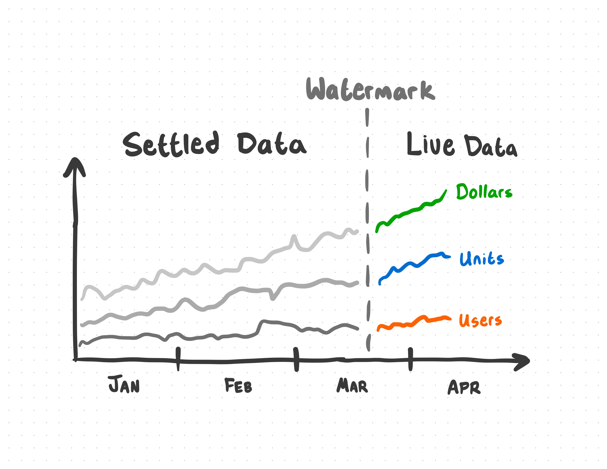

This post was written during my time as a software engineer at M Science as a joint project with Databricks. You can view the original post here
Let’s say that you, a ✨ humble data plumber ✨ of the Big Data era, have been tasked to create an analytics solution for an online retail dataset:
| InvoiceNo | StockCode | Description | Quantity | InvoiceDate | UnitPrice | CustomerID | Country |
|---|---|---|---|---|---|---|---|
| 536365 | 85123A | WHITE HANGING HEA… | 6 | 2012-01-10 | $2.55 | 17850 | United Kingdom |
| 536365 | 71053 | WHITE METAL LANTERN | 6 | 2012-01-10 | $3.39 | 17850 | United Kingdom |
| 536365 | 84406B | CREAM CUPID HEART… | 8 | 2012-01-10 | $2.75 | 17850 | United Kingdom |
| … | … | … | … | … | … | … | … |
The analysis you’ve been asked for is simple - an aggregation of the number of dollars, units sold, and unique users for each day, and across each stock code. With just a few lines of PySpark, we can transform our raw data into a usable aggregate:
import pyspark.sql.functions as F
df = spark.table("default.online_retail_data")
agg_df = (
df
# Group data by month, item code and country
.groupBy(
"InvoiceDate",
"StockCode",
)
# Return aggregate totals of dollars, units sold, and unique users
.agg(
F.sum("UnitPrice")
.alias("Dollars"),
F.sum("Quantity")
.alias("Units"),
F.countDistinct("CustomerID")
.alias("Users"),
)
)
(
agg_df.write
.format('delta')
.mode('overwrite')
.saveAsTable("analytics.online_retail_aggregations")
)With your new aggregated data, you can throw together a nice visualization to do… business things.

This works - right?
An ETL process like will work great for a static analysis, where you don’t expect the data to ever be updated - you assume the data you have now is going to be the only data you ever have. The problem with a static analysis?
Modern data doesn’t stop growing.
What are you going to do when you get more data?
The naive answer would be to just run that same code every day, but then you’d be re-processing all of the data, every time you run the code. Each new update means re-processing data you’ve already processed before. When your data gets big enough, you’ll be doubling down on what you spend in time and compute costs.
 With a static analysis, you spend money on re-processing data you’ve already processed before
There are very few modern data sources that aren’t going to be updated. If you want to keep your analytics growing with the source of your data, and save yourself a fortune on compute cost, you’ll need a better solution.
What do we do when our data grows?
In the past few years, the term “Big Data” has become… lacking. As the sheer volume of data has grown and more of life has moved online, the era of Big Data has started to become the era of “God Help Us, It Just Won’t Stop Getting Bigger Data.” A good data source doesn’t stop growing while you work, and this growth can make keeping data products up-to-date a monumental task.
At M Science, our mission is to use alternative data - data outside of your typical quarterly report or stock trend data sources - to analyze, refine, and predict change in the market and economy.
Every day, our analysts and engineers face a challenge: alternative data grows really fast. I’d even go as far to say that, if our data ever stops growing, something in the economy has gone very, very wrong.
As our data grows, our analytics solutions need to handle that growth. Not only do we need to account for growth, we also need to account for data that may come in late or out-of-order. This is a vital part of our mission - every new batch of data could be the batch that signals a dramatic change in the economy.
To make scalable solutions to the analytics products that M Science analysts and clients depend on every day, we use Databricks Structured Streaming. Structured Streaming gives us the assurance that, as our data grows, our solutions will scale as well.
Using Spark Structured Streaming
Structured Streaming comes into play when new batches of data are being introduced into your data sources. Structured Streaming leverages Delta Lake’s ability to track changes in your data to determine what data is part of an update and re-computes only the parts of your analysis that are affected by the new data.
It’s important to re-frame how you think about streaming data. For many people, “streaming” means real-time data - streaming a movie, checking Twitter, checking the weather, et cetera. If you’re an analyst, engineer, or scientist, any data that gets updated is a stream. The frequency of the update doesn’t matter. It could be seconds, hours, days, or even months - if the data gets updated, the data is a stream. If the data is a stream, then Structured Streaming is going to save you a lot of headaches.
 With Structured Streaming, you can avoid the cost of re-processing previous data
With Structured Streaming, you can avoid the cost of re-processing previous data
Let’s step back into our hypothetical - you have an aggregate analysis that you not only need to deliver today, but also keep updating as new data rolls in. This time, we have the DeliveryDate column to remind us of the futility of our previous single-shot analysis:
| InvoiceNo | StockCode | Description | Quantity | InvoiceDate | DeliveryDate | UnitPrice | CustomerID | Country |
|---|---|---|---|---|---|---|---|---|
| 536365 | 85123A | WHITE HANGING HEA… | 6 | 2012-01-10 | 2012-01-17 | 2.55 | 17850 | United Kingdom |
| 536365 | 71053 | WHITE METAL LANTERN | 6 | 2012-01-10 | 2012-01-15 | 3.39 | 17850 | United Kingdom |
| 536365 | 84406B | CREAM CUPID HEART… | 8 | 2012-01-10 | 2012-01-16 | 2.75 | 17850 | United Kingdom |
| … | … | … | … | … | … | … | … | … |
Thankfully, the interface for Structured Streaming is incredibly similar to your original PySpark snippet. Here is your original static batch analysis code:
# =================================
# ===== OLD STATIC BATCH CODE =====
# =================================
import pyspark.sql.functions as F
df = spark.table("default.online_retail_data")
agg_df = (
df
# Group data by date & item code
.groupBy(
"InvoiceDate",
"StockCode",
)
# Return aggregate totals of dollars, units sold, and unique users
.agg(
F.sum("UnitPrice")
.alias("Dollars"),
F.sum("Quantity")
.alias("Units"),
F.countDistinct("CustomerID")
.alias("Users"),
)
)
(
agg_df.write
.format('delta')
.mode('overwrite')
.saveAsTable("analytics.online_retail_aggregations")
)With just a few tweaks, we can adjust this to leverage Structured Streaming. To convert your previous code, you’ll:
- Read our input table as a stream instead of a static batch of data
- Make a directory in your file system where checkpoints will be stored
- Set a watermark to establish a boundary for how late data can arrive before it is ignored in the analysis
- Modify some of your transformations to keep the saved checkpoint state from getting too large
- Write your final analysis table as a stream that incrementally processes the input data
We’ll apply these tweaks, run through each change, and give you a few options for how to configure the behavior of your stream.
Here is the ✨ stream-ified ✨ version of your old code:
# =========================================
# ===== NEW STRUCTURED STREAMING CODE =====
# =========================================
+ CHECKPOINT_DIRECTORY = "/delta/checkpoints/online_retail_analysis"
+ dbutils.fs.mkdirs(CHECKPOINT_DIRECTORY)
+ df = spark.readStream.table("default.online_retail_data")
agg_df = (
df
+ # Watermark data with an InvoiceDate of -7 days
+ .withWatermark("InvoiceDate", f"7 days")
# Group data by date & item code
.groupBy(
"InvoiceDate",
"StockCode",
)
# Return aggregate totals of dollars, units sold, and unique users
.agg(
F.sum("UnitPrice")
.alias("Dollars"),
F.sum("Quantity")
.alias("Units"),
+ F.approx_count_distinct("CustomerID", 0.05)
.alias("Users"),
)
)
(
+ agg_df.writeStream
.format("delta")
+ .outputMode("update")
+ .trigger(once = True)
+ .option("checkpointLocation", CHECKPOINT_DIR)
+ .toTable("analytics.online_retail_aggregations")
)Let’s run through each of the tweaks we made to get Structured Streaming working:
+ df = spark.readStream.table("default.online_retail_data")Of all of Delta tables’ nifty features, this may be the niftiest: you can treat them like a stream. Because Delta keeps track of updates, you can use .readStream.table() to stream new updates each time you run the process.
It’s important to note that your input table must be a Delta table for this to work. It’s possible to stream other data formats with different methods, but .readStream.table() requires a Delta table
+ # Create checkpoint directory
+ CHECKPOINT_DIRECTORY = "/delta/checkpoints/online_retail_analysis"
+ dbutils.fs.mkdirs(CHECKPOINT_DIRECTORY)In Structured Streaming-jargon, the aggregation in this analysis is a stateful transformation. Without getting too far in the weeds, Structured Streaming saves out the state of the aggregation as a checkpoint every time the analysis is updated.
This is what saves you a fortune in compute cost: instead of re-processing all the data from scratch every time, updates simply pick up where the last update left off.
+ # Watermark data with an InvoiceDate of -7 days
+ .withWatermark("InvoiceDate", f"7 days")When you get new data, there’s a good chance that you may receive data out-of-order. Watermarking your data lets you define a cutoff for how far back aggregates can be updated. In a sense, it creates a boundary between “live” and “settled” data.
To illustrate: let’s say this data product contains data up to the 7th of the month. We’ve set our watermark to 7 days. This means aggregates from the 7th to the 1st are still “live”. New updates could change aggregates from the 1st to the 7th, but any new data that lagged behind more than 7 days won’t be included in the update - aggregates prior to the 1st are “settled”, and updates for that period are ignored.
 New data that falls outside of the watermark is not incorporated into the analysis.
It’s important to note that the column you use to watermark must be either a Timestamp or a Window.
+ F.approx_count_distinct("CustomerID", 0.05)In order to keep your checkpoint states from ballooning, you may need to replace some of your transformations with more storage-efficient alternatives. For a column that may contain lots of unique individual values, the approx_count_distinct function will get you results within a defined relative standard deviation.
+ agg_df.writeStream
.format("delta")
+ .outputMode("update")
+ .trigger(once = True)
+ .option("checkpointLocation", CHECKPOINT_DIR)
+ .toTable("analytics.online_retail_aggregations")The final step is to output the analysis into a Delta table. With this comes a few options that determine how your stream will behave:
.outputMode("update")configures the stream so that, each time the code runs, the aggregation will pick up where it left off instead of running from scratch. To re-do an aggregation from scratch, you can use"complete"- in effect, doing a traditional batch aggregate while still preserving the aggregation state for a future"update"run.trigger(once = True)will trigger the query once when the line of output code is started, and then stop the query once all of the new data has been processed."checkpointLocation"lets the program know where checkpoints should be stored.
These configuration options make the stream behave most closely like the original one-shot solution.
This all comes together to create a scalable solution to your growing data. If new data is added to your source, your analysis will take into account the new data without costing an arm and a leg.
You’d be hard pressed to find any context where data isn’t going to be updated at some point. It’s a soft agreement that data analysts, engineers, and scientists make when we work with modern data - it’s going to grow, and we have to find ways to handle that growth.
With Spark Structured Streaming, we can use the latest and greatest data to deliver the best products, without the headaches that come with scale.